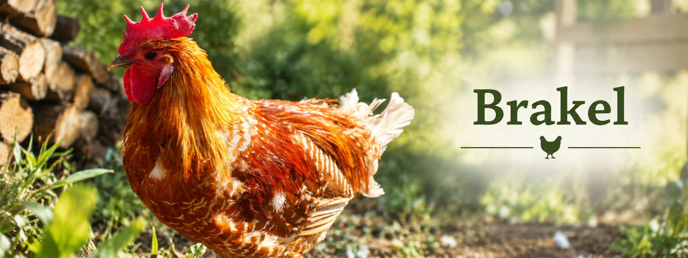

Eine alte belgische Hühnerrasse mit besonderer Gefiederzeichnung

Das Brakelhuhn ist eine alte belgische Hühnerrasse und zählt zu den älteren europäischen Landhuhnrassen. Es zeichnet sich durch seine besondere Gefiederzeichnung, seine gute Legeleistung und sein lebhaftes Wesen aus.
Die Tiere sind sehr aktiv und nutzen ihren Auslauf intensiv. Aufgrund ihrer Aufmerksamkeit und Beweglichkeit eignen sie sich besonders für eine Haltung mit ausreichend Platz.
Der gold-weißfarbige Farbschlag gehört zu den auffälligen Varianten des Brakelhuhns. Typisch sind die goldgelbe Grundfarbe und die weißen Zeichnungselemente des Gefieders.
Hähne besitzen meist eine kräftigere Färbung mit auffälligem Halsbehang und Schwanzgefieder. Die Hennen zeigen eine gleichmäßigere Zeichnung und wirken etwas dezenter.
Durch ihre besondere Farbgebung sind gold-weißfarbige Brakel ein besonderer Blickfang in meiner Zucht.
| Merkmal | Beschreibung |
|---|---|
| Herkunft | Belgien |
| Nutzung | Legehuhn |
| Besonderheit | Charakteristische Gefiederzeichnung |
| Charakter | Lebhaft und aufmerksam |
| Eier pro Jahr | ca. 180 bis 220 |
An den Brakelhühnern gefällt mir besonders ihre elegante Erscheinung und ihr aktives Verhalten. Sie sind ständig in Bewegung und dadurch interessant zu beobachten.
Außerdem hebt sich der gold-weißfarbige Farbschlag deutlich von vielen anderen Hühnerrassen ab und macht die Tiere zu einem besonderen Blickfang im Auslauf.
HTML steht für HyperText Markup Language und bildet die Grundlage jeder Webseite. Mit HTML werden Inhalte wie Überschriften, Texte, Bilder, Tabellen und Links strukturiert.
Der Browser liest den HTML-Code und stellt die Inhalte anschließend grafisch dar. HTML besteht aus sogenannten Elementen. Viele Elemente besitzen einen öffnenden und einen schließenden Tag.
<p>Dies ist ein Absatz.</p>
In diesem Beispiel kennzeichnet das Element
p einen Absatz.
Für die Strukturierung einer Webseite werden Überschriften verwendet. HTML bietet dafür die Überschriftsebenen h1 bis h6.
Die Überschrift h1 besitzt die höchste Bedeutung und wird auf einer Webseite normalerweise für die Hauptüberschrift verwendet.
<h1>Brakel Hühner</h1>
<h2>Eigenschaften</h2>Durch eine sinnvolle Verwendung von Überschriften wird eine Webseite übersichtlicher und leichter verständlich.
Bilder werden mit dem img-Element eingebunden.
Das Attribut src gibt den Speicherort der Bilddatei an.
<img src="../Bilder/brakel.jpg"
alt="Brakel Hahn">
Das Attribut alt enthält einen Alternativtext.
Dieser wird angezeigt, wenn das Bild nicht geladen werden kann,
und verbessert außerdem die Barrierefreiheit der Webseite.
Links ermöglichen die Verbindung verschiedener Webseiten.
Sie werden mit dem a-Element erstellt.
<a href="../index.html">
Zur Startseite
</a>
Das Attribut href enthält die Zieladresse des Links.
Dadurch können Besucher zwischen den einzelnen Seiten der Webseite
navigieren.
HTML bildet die technische Grundlage moderner Webseiten. Es sorgt für eine klare Strukturierung der Inhalte und ermöglicht gemeinsam mit CSS und JavaScript die Entwicklung interaktiver Webanwendungen.
© Atina Rodler 21.04.2026